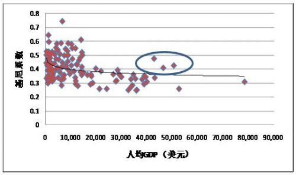

返回主页
图4：经济发展水平与收入分配

(数据来源：人均GDP数据来自国际货币基金组织 http://www.imf.org/external/pubs/ft/weo/2010/01/weodata/WEOApr2010all.xls；基尼系数数据来自UNDP http://hdrstats.undp.org/en/indicators/161.html。 )
version:1.0; jobnet@188.com ©
retter2012.com